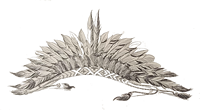

Tão logo entraram no hotel, caiu uma chuva muito forte. O Arrelia expressou seu contentamento por terem escapado do aguaceiro. As crianças, porém, prefeririam ter ficado no bosque admirando a tempestade de sob alguma grande árvore e voltar, depois, entrando nas poças de água. A fim de distraí-las, o Arrelia levou-as para verem a chuva e todos se acotovelaram nas janelas de um dos quartos. Eram duas janelas muito grandes e eles se acomodaram bem, três em cada janela. Chovia que dava medo. Logo a rua começou a encher-se de água, e Iberê, que gostava de fazer uma piadinha, disse:
- Mais um pouco e teremos uma piscina. Poderemos saltar daqui.
Imediatamente Carlinhos saiu da janela e foi remexer em sua mala. Curioso, o Arrelia ficou vendo o que ele fazia. Por fim, não aguentou mais:
- Você está procurando alguma coisa, Carlinhos?
O menino, bufando de raiva, respondeu:
- É claro que estou procurando! Quero o meu calção e não sei onde está!
- Calção? Para que você quer o calção? – perguntou o Arrelia coçando a cabeça.
Carlinhos parou de mexer nas roupas e olhou para o Arrelia com cara de espanto:
- Para quê? Ora! Para pular na piscina!
Desta vez o Arrelia ficou meio assustado:
- Piscina? Onde é que tem piscina?
- Na rua, lá embaixo! Não viu i Iberê dizer que logo poderemos saltar na rua?
O Arrelia caiu na gargalhada. Os outros, atraídos pelas risadas quiseram saber o que havia acontecido. E todos riram de gosto, menos Carlinhos que foi para a janela meio zangado.
- Mas vejam só! – exclamou o Arrelia ainda rindo. E se ele pulasse de cabeça? Já pensaram no estrago que faria na calçada?
Novas gargalhadas. Acomodaram-se outra vez nas janelas. A chuva continuava tão forte como antes. A rua estava bem cheia de água. Depois de algum tempo o aguaceiro cessou. As casas se refletiam na água com bastante clareza. Iberê saiu com esta:

- Acho que há outra cidade lá embaixo, olhem! Bem que podíamos dar um passeio por ela, não é mesmo?
O Arrelia gostou da idéia:
- É mesmo. Será um passeio divertido! Talvez seja a cidade submersa de Sapucaia-Oroca!Todas as crianças o olharam com um olhar de dúvida: “Passear na água?”- pensaram. O Arrelia esclareceu:
- Vocês não precisam ficar “assustaudos”! Vamos passear só de brincadeira, de imaginação!
Jaci deu um suspiro de alívio:
- Pensei que tivesse acontecido alguma coisa com a cabeça do Arrelia! – Mas que cidade é essa de Sapucaia.... Sapucaia o quê, Arrelia?
- Sapucaia-Oroca. Uma cidade de índios que foi coberta pelas águas. É uma cidade fantástica – disse o Arrelia afastando-se.
As crianças deixaram as janelas e se acomodaram de vários modos: nas camas, nas malas, no chão ao pé do Arrelia que se sentara numa confortável cadeira antiga. Ele continuou:
- Os índios haviam conseguido construir uma cidade muito bonita. Completamente diferente das aldeias que costumam fazer. Era uma cidade rica, com casas e palácios feitos de ouro. As ruas tinham sido cobertas de pedras preciosas que brilhavam mais do que estrelas. Os habitantes também andavam ricamente vestidos e costumavam dar festas que duravam dias e dias. As melhores comidas e bebidas eram servidas.
Iberê passou a língua pelos lábios:
- Eu ali, já pensou? Não aguento mais de fome!
- Coitados dos índios! – exclamou o Arrelia. Não sobraria muito para eles comerem, não. Com o “apetiute” que você tem!
Ajeitando-se melhor na caldeira, o Arrelia continuou:
- Eram festas que nem podemos imaginar. Com o tempo, os índios não queriam fazer outra coisa a não ser dar festas. Tupã não estava gostando daquilo. Andava “preocupaudo” com o que acontecia. Os índios não pensavam em mais nada! Nem queriam pensar em trabalhar! Como eram ricos, compravam o que precisavam dos índios da vizinhança. Tupã mandou-lhes diversos avisos. Eles nem tomaram conhecimento. Continuaram a levar a vida em festas e divertimentos. Tupã aborreceu-se e fez cair uma tremenda chuva que durou muitos dias. A água foi subindo sem parar. Os habitantes podiam ter fugido, mas, não querendo abandonar as riquezas, preferiam ficar na cidade.

Marisa não se conformou:
- Mas que bobos! Por que não abandonaram tudo?
O Arrelia levantou-se, apanhou a bengala e começou a girá-la andando pelo quarto:
- Parece fácil. Acontece que eles não queriam abandonar aquelas riquezas. Tupã queria que deixassem a cidade e começassem a trabalhar novamente. Mas não foi possível. Agarraram-se às suas riquezas e não saíram da cidade. Onde ela estava formou-se um grande rio. A cidade desapareceu nas águas.
- E morreram agogados! – gritou Carlinhos com expressão de terror.
- Aí é que está – continuou o Arrelia. Tupã não deixou que morressem. Continuaram a viver dentro da água! Quem passa perto diz ouvir galos cantando dentro do rio. São os espíritos protetores dos índios alertando os habitantes da nova povoação que surgiu nas proximidades para que também não sejam castigados. Daí vem o nome Sapucaia-Oroca. Significa “galinheiro”. Não fiquem “espantaudos”, não. Tudo é possível no mundo das lendas.
Sérgio, que não piscara até aquele momento, sacudiu a cabeça:
- Mas viver dentro da água? Como?
- É possível, sim – afirmou o Arrelia. Digo que é porque já estive visitando essa cidade.
- O quê? – exclamaram as cinco crianças de uma só vez.
- Estão admirados? Pois é verdade. Foi assim: Eu estava deitado perto da beira de um rio, um grande rio, descansando. Aí dormi. Depois acordei. Ao chegar mais perto dele, escorreguei e caí na água. Dei uma “cabeçauda” em alguma coisa e vi que era a torre de um palácio todo de ouro. Percebi que eu podia respirar normalmente como se estivesse em terra. Fui descendo, descendo até chegar ao fundo. Fiquei mais surpreso ainda pois vi que podia andar como se não houvesse água. Eu estava numa bonita cidade com casas e palácios feitos inteiramente de ouro. Tudo silencioso. Não havia ninguém. Comecei a andar pelas ruas e notei que eram calçadas com pedras preciosas. Só vendo. Quando eu ia virando uma esquina, dei de cara com um índio. Cumprimentei-o e ele me respondeu. Interessante é que eu podia entendê-lo embora não conhecesse sua língua. Perguntei o que significava aquilo e ele me explicou:
- Esta é a cidade de Sapucaia-Oroca. E contou-me o que vocês já sabem. Fiquei curioso:
- Você vive sozinho aqui?
- Não – respondeu o índio. Minha gente está mais adiante, trabalhando. Quer ir até lá?


- É claro! – exclamei entusiasmado. Vamos indo!
O Arrelia pôs a bengala num canto do quarto e continuou:
- Fomos andando até que demos com uma porção de índios trabalhando. Estavam uns trepados em grandes árvores e atiravam uns frutos esquisitos para os outros que se encontravam embaixo.
- Que frutos são aqueles? – perguntei.
- São peixes – respondeu o índio calmamente.
- Peixes? – gritei, dando um pulo deste tamanho. Peixes em árvores? Devo estar sonhando!
- Não, não está – afirmou o índio. Como nós fomos obrigados a viver dentro da água, não pudemos mais acender fogo. Criamos então diversas coisas para podermos viver mais facilmente. Era difícil pescar neste lugar pois éramos vistos pelos peixes e eles fugiam. Os que conseguíamos pegar tinham de ser comidos crus. Aí os nossos feiticeiros conseguiram criar essas árvores que dão peixes. Os peixes verdadeiros agora são nossos amigos e nos ajudam no trabalho.
- Ainda acho que estou sonhando – disse eu.
- Mas não está – respondeu o índio. E temos árvores que dão diversos tipos de peixes. E também de vários modos: fritos, cozidos...
O índio pegou um dos peixes que haviam sido colhidos e depositados em grandes cestos e pediu para eu prova-lo. Estava uma delícia o cheiro que saía dele. Comecei a abri-lo para tirar as espinhas.
- O que está fazendo? – quis saber o índio.
- Ora. Vou tirar as espinhas, é claro.
- Espinhas? Nossos peixes não tem espinhas!
- Não têm espinhas? Verdade?

- É só provar.
De fato, o peixe não tinha um osso. Jamais eu havia provado coisa igual. Depois fomos a outras plantações de carne de vários animais, prontos para serem comidos, de bolinhos de mandioca e não sei o que mais. Comi tanto que fiquei pesado como chumbo. Que Que “viuda” boa!
- Diga-me uma coisa – pediu Carlinhos. Se eles podiam viver até dentro da água por que não vinham para a terra?
- Naturalmente não queriam abandonar a cidade. Também por certo Tupã não deixava.
Aí o meu companheiro me levou para ver um cercado cheio de galos. Eram eles que costumavam cantar. À primeira vista pareciam aves comuns. Depois de observá-los um pouco, notava-se que possuíam rabo de peixe e no lugar de asas tinham barbatanas. Continuamos a andar pelas ruas. Dei com um palácio tão lindo que me deixou parado de surpresa. Era também todo feito de ouro, e as janelas, no lugar de vidraças, tinham pedras preciosas das mais variadas cores. Dois enormes peixes montavam guarda na porta de entrada, um de cada lado.
- Esse é o palácio da nossa princesa – esclareceu o índio. Ela é quem governa a cidade pois a rainha anda doente e nosso chefe trabalha conosco. Normalmente, a princesa não precisaria fazer nada, mas como Tupã quer que todos trabalhemos, ela passa o tempo tecendo redes encantadas.
Fiquei espantado vendo que a princesa era ajudada por uma porção de peixinhos. Pegavam os fios e rapidamente faziam o tecido. A princesa era tão bonita que parecia mentira.
- Por que são redes encantadas? – perguntei.
O índio tomou um ar muito sério:
- Porque basta que a gente se deite nelas para ter os melhores sonhos. Dorme-se tão bem que não há quem não acorde feliz.
- “Se eu pudesse levar algumas dessas redes comigo poderia ganhar rios de dinheiro!” – pensei.
Fomos para mais perto da princesa. Nem havia percebido a nossa presença tão entretida estava. Quando me viu, cumprimentou-me delicadamente. Os peixes, porém, que estavam com ela, não gostaram da interrupção. Olharam-me com uma cara feia e rosnaram como os cachorros. Dei um pulo para trás e pisei no pé do índio que ficou gemendo que dava pena, saltando num pé só e segurando o outro com as mãos. Pedi-lhe desculpas uma porção de vezes antes que ele conseguisse ouvir-me. Depois que ele se acalmou, perguntei-lhe sobre aqueles peixes que rosnavam como cachorros.
- Esses peixes foram criados por nossos feiticeiros especialmente para ajudarem e guardarem a princesa porque há falta de pessoas, entende?
- Não diga! Surpreendi-me.
Quando fui passar a mão na cabeça de um dos peixes, quase levei uma dentada.
- Cuidado! – gritou o índio. Parece que não gostaram muito de você!
A princesa era realmente bonita. Estava vestida com ricos tecidos cobertos de pedras preciosas. Possuía uns olhos muito grandes e muito negros e a pele bronzeada como tem os índios, porém muito mais suave. Suas mãos, pequenas e delicadas, moviam-se mais ligeiras do que os peixes. Coisa estranha eram seus cabelos. Eram louros! Louríssimos! Já viram índia assim?
- Então era peruca! – interrompeu Iberê aproveitando a oportunidade para brincar.
- Peruca você vai ter de usar se não ficar quieto! – advertiu o Arrelia, fingindo-se de bravo, e continuou:
- Seus cabelos eram tão louros que me deixaram espantado. Não resisti e disse ao índio:
- Nunca eu tinha visto cabelos iguais! Parecem de ouro!
O índio me olhou com surpresa como se minha pergunta não possuísse sentido:
- Pois são de ouro!
- De ouro? – perguntei. Como podem ser de ouro?
- Depois que nossa cidade ficou submersa, começou a faltar-nos ouro, é lógico. Passamos um bom tempo assim. Graças aos nossos feiticeiros, os cabelos da princesa foram transformados em fios de ouro. Ouro puro! E não param de crescer! Se observar bem, verá que estão mais compridos do que quando chegamos.
Olhei e vi que era verdade. Estavam um palmo mais comprido do que quando havíamos entrado. Aí alguns dos peixes que estavam trabalhando morderam e cortaram um bom pedaço dos cabelos da princesa. Depois colocaram os fios num canto da sala. Só então notei o monte de fios de ouro que estava ali. Era de deixar a gente “assustaudo”!
- Quanto ouro! – exclamei. E o que vão fazer com ele?
- Logo outros peixes virão busca-lo para a nossa gente construir novas casas e consertar as que precisam de reparos.
Mal ele havia falado e um cardume de peixes entrou na sala, levando embora aquele monte de ouro. E os cabelos da princesa não paravam de crescer. Não resisti a vontade de mexer naqueles fios dourados e estendi a mão. O índio deu um pulo e puxou-me para trás, gritando:

- Não faça isso! Se alguém tocar nos cabelos da princesa antes de serem cortados, acabará com o encanto e não teremos mais ouro!
- Mas se você não tinha dito nada, como é que eu ia saber?
É verdade. Foi por esquecimento. Mas agora está avisado.
- Está certo – concordei.
Depois de haver-me avisado foi que me deu mesmo vontade de mexer neles. Quando julguei que o índio estava distraído, estendi a mão devagarinho, Os peixes, quando perceberam minha intenção, avançaram que nem loucos e me obrigaram a correr.
- Vamos embora – disse o índio. Se ficarmos aqui, ainda é capaz que você faça alguma bobagem!
Despedi-me da princesa e saímos. Caminhamos mais um pouco por aquelas ruas maravilhosas. Mais adiante passamos por baixo de uma árvore muito grande, coberta de uns frutos dourados e brilhantes.
- Que árvore é essa? – perguntei.
- Essa? É a Árvore do Sol! – disse o índio.
Vendo pela minha cara que eu estava na mesma, ele esclareceu:
- Como aqui não vemos o Sol, nossos feiticeiros criaram essa árvore. Cada índio pode manter em sua casa um desses frutos, que é um pequenino sol, e gozar de seu calor e de sua alegria.
- E não queima? – interroguei curioso.
- Não, não queima. O máximo que nossos feiticeiros conseguiram foi um pequeno calor, suficiente, porém, para tornar agradável o interior de uma casa. Há a Árvore da Lua também. Quer vê-la?
- É claro! Onde?

É aquela ali.
Era uma árvore mais baixa do que a do Sol, toda cheia de luazinhas.
- Dessas eu quero uma! – exclamei entusiasmado. Como são bonitinhas!
- Não pode! Se um branco põe a mão num desses sóis ou numa dessas luas, quebra o encanto! Vamos andando!
Quando ele virou as costas, dei um pulo para ver se pegava uma luazinha. Ele voltou-se a tempo de ver o meu pulo e ficou louco da “viuda”:
- Eu não disse que não pode pegar? Que homem teimoso! Vamos embora!
Fiquei meio envergonhado e acompanhei-o. Mas aquelas luazinhas eram tão bonitinhas... Ah se eu pudesse pegar uma, só uma! Continuamos nosso passeio. Chegamos a um lugar cheio de árvores. Estas estavam cobertas de frutas.
- Posso pegar uma? – perguntei.
- Pode. Pode se os peixes deixarem.
- Peixes? Também aí?
- Não está vendo?
Olhei com mais atenção e vi que realmente havia uma porção de peixes naquelas árvores. Pedi ao índio que me explicasse o que faziam aqueles peixes. Ele explicou-me:
- Nosso povo também não dá conta do trabalho que temos aqui e assim pedimos a colaboração dos peixes. Os peixes são ótimos colhedores de frutas. Veja.
Fiquei de boca aberta. Como trabalhavam! Que rapidez! Uns derrubavam as frutas e outros as colocavam nos cestos. O índio perguntou-me:

- Não vai pegar uma fruta?
Olhei para ele, já de cara feia:
- Quem, eu? Para ser mordido por esses peixes? Vá saindo! Prefiro ficar com “vontade”! Mas diga-me. Por que não usam peixes para colher os peixes que dão naquelas outras árvores?
- Seria humilhante para eles, não acha? Ficariam tristes!
Demos mais umas voltas. A cada passo eu encontrava novas maravilhas. Depois ele me levou ao Palácio dos Desejos. Vocês precisavam ver que coisa! Não existem palavras para descrever o que vi. O índio me esclareceu:
- É aqui que matamos a saudade daquilo que desejamos.
- Não entendi.
- Como sabe, temos falta de muitas coisas. Algumas vezes dá vontade de ver uma floresta, um campo banhado pelo Sol... Basta a gente pensar e surge a imagem desejada.
- Não diga! É verdade?
- Como não? Quer fazer uma experiência?
- É claro!
- Então pense numa coisa que deseja ver.
Como eu já estava cansado de ver tanta água, imaginei uma floresta bem verde, cheia de flores, de insetos, de animais. Imediatamente tive a impressão de que estava nela. Que beleza! Foi tão real a cena que senti um macaco puxar-me a bengala. Uma abelha começou a voar em volta da minha cabeça e eu, com medo de levar uma ferroada, deixei de pensar na floresta e me vi outra vez no palácio juntamente com o índio. Depois pensei em outras coisas até me cansar.
Na volta, como passamos novamente perto da Árvore da Lua, não consegui evitar de ser atraído pela beleza das luazinhas. Deixei que meu companheiro desse uns passos na minha frente e pulei para pegar uma delas. O “bandiudo”do índio voltou-se bem na hora e me surpreendeu pulando. Ficou bravo que dava medo:

- Será possível? Eu não lhe falei que não pode pegar? Por que tanta teimosia? Já vi que não pode continuar aqui.
Ele não quis aceitar nenhuma desculpa ou explicação:
- Você não pode ficar aqui. Tem de ir embora.
Prometi não fazer mais aquilo, porém não adiantou nada. Ele chamou um peixe, um baita peixão, e disse-me:
- Monte no peixe que ele o levará ao lugar de onde você veio.
Como vi que não adiantava insistir mais, montei no peixe e ele partiu. Jogou-me exatamente no lugar do qual eu havia mergulhado. Interessante que eu não estava molhado. Aí fiquei com um sono irresistível e dormi. Quando acordei, já estava anoitecendo. Levantei-me e fui embora.
- Olhe, Arrelia – disse Iberê. Você deve ter sonhado um sonho daqueles!
O Arrelia mostrou-se ofendido:
- Sonho? Mas se eu tivesse pegado uma luazinha vocês iam ver se foi sonho! É pena que seja muito longe senão iríamos lá!
Todas as crianças gritaram ao mesmo tempo:
- Quem? Nós?
E uma a uma foram dizendo:
- Eu não!